General Observations
GENERAL OBSERVATIONS
I began my placement on 14 September 2026. I spent much of the first week observing my mentor teacher teach Year 10 Science. As I began teaching the two Year 10 groups myself, I could compare what I had noticed in my mentor teacher’s classroom with what happened when I planned and led a lesson.
What I noticed in my mentor teacher’s lessons
I had heard that Year 10 could be challenging, so I was surprised by how long students stayed with difficult tasks in my mentor teacher’s lessons. At first, I put this down to my mentor teacher’s humour and the relationships he had built with the students. Then I began noticing the decisions he made before and during the lesson. He changed the seating to suit the activity and used physical models when an idea was hard to explain in words. What I could see was that students kept working. To find out whether they understood the Science, I would still need to ask them to explain it.
Placement context
I am completing the Master of Teaching and Learning at the University of Waikato. During this placement I planned and taught an electricity unit for two Year 10 Science groups. I also observed and supported other Science and Physics classes, helped with Year 13 exam preparation and co-led a primary Science Club activity.
Placement timetable
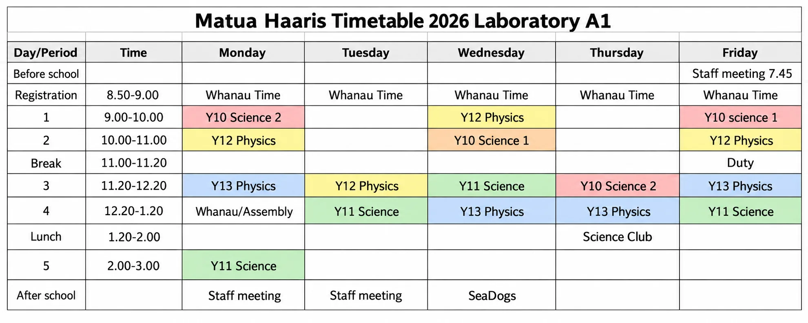
This is the timetable I was given for placement. It includes classes I observed or supported as well as those I taught. Science 1 met on Wednesday and Friday, and Science 2 on Monday and Thursday.
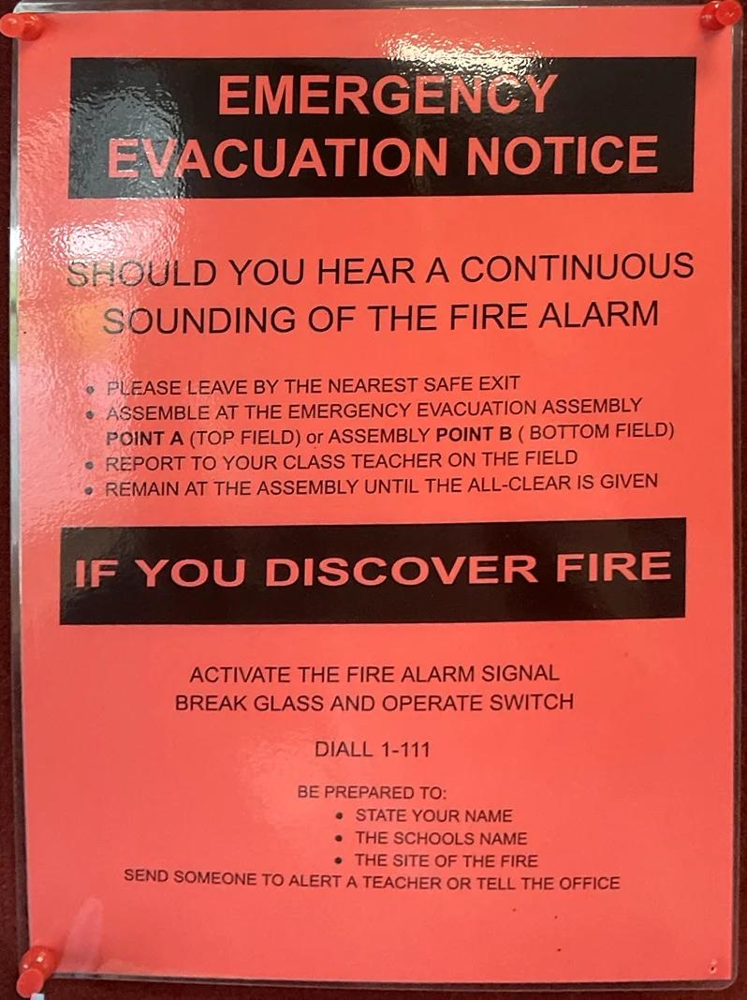
The laboratory evacuation notice gives the alarm, exit and assembly procedures I needed to know before taking responsibility for a class.
Goal 1: Curriculum, unit and lesson planning
I originally planned 12 lessons on electricity for both Year 10 groups. After the introductory lesson on 12 October, I realised that I had moved too quickly past charge. I revisited it using an atom model and the Van de Graaff generator before moving further into circuits. I kept the original unit plan and changed the individual lesson plans as I learnt what each group needed. That distinction matters because the groups did not always get to the same point, even when they started with the same plan.
Goal 2: Design, construct, use and evaluate models
I worked with my mentor teacher on ball tracks, a large ramp and a standing-wave setup. We looked for materials at the recycling centre, and I recommended the signal generator that the school bought. I used it with a vibration generator to show standing waves. Building a model is only part of the job. With the ramp, for example, I could use height to help students think about voltage, but I also needed to explain where the comparison stopped working.
The curved mirror and the surfboard displays were already in the Science room when I arrived. The next set of photographs shows resources I built or helped build during placement.
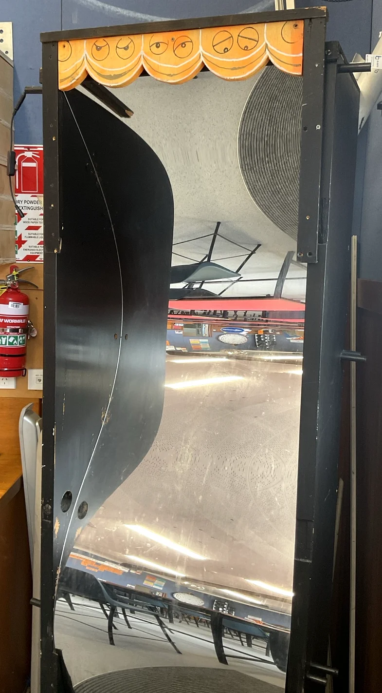
Curved mirror: An existing classroom resource that distorts the reflected image.
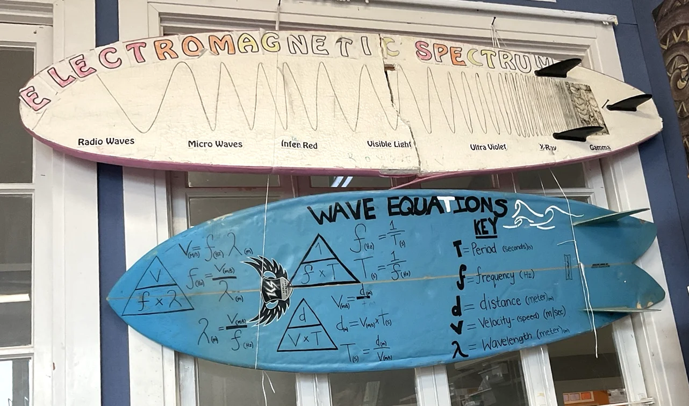
Surfboard displays: Existing classroom resources showing the electromagnetic spectrum and the relationships between wave speed, frequency, wavelength and period.
Models I built or helped build
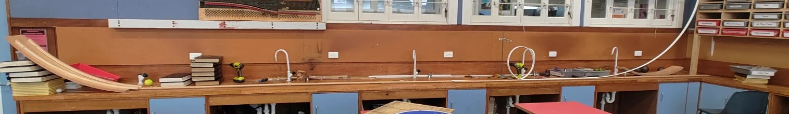
Ball tracks: I helped build these to show how a ball’s energy changes as it rolls down a ramp and through a loop.

Standing-wave resource: I built the wooden frame to hold the vibration generator. The generator made the pattern on the string easier to see than on the piano next to it. This photograph records the setup as it was being developed.

Large ramp: A resource I built or helped build to demonstrate energy transformations as a ball rolls down and up a track. I also used the ramp in the Year 10 electricity unit to relate height to voltage.
Goal 3: Plan, organise and evaluate a local field trip
I discussed a local field trip with my mentor teacher on 13 October. We considered a beach within walking distance instead of travelling to a wind farm. The idea is for students to see whether wind or flowing water can turn a small motor fast enough to produce a measurable voltage. I had already seen how weather could affect an outdoor lesson: one Year 10 group finished its skate-park ramp investigation, but rain interrupted the other group. That is why I want a classroom test that asks the same scientific question. The beach investigation is still planned.
School culture: Karakia
The Years 7–13 assembly on 12 October opened with a karakia and the national anthem and closed with “Whakamau”. I did not note which karakia was used that morning. The displayed words to “Whakataka te hau” have given me a reference as I learn the school karakia.
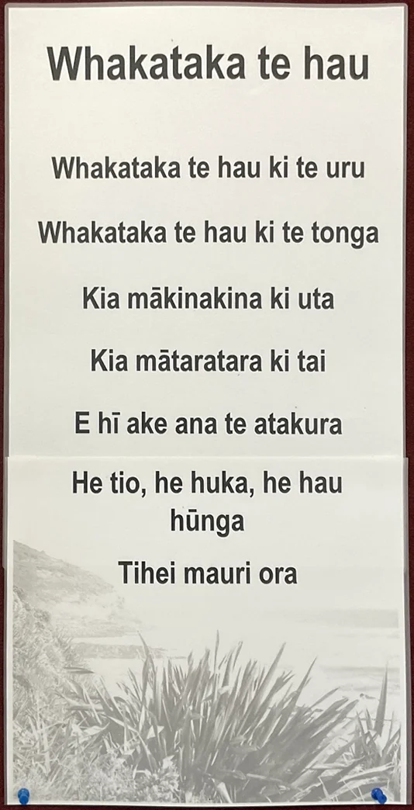
Karakia display: “Whakataka te hau” is displayed in the school. The display provides a reference for learning the words, alongside opportunities to develop pronunciation and understanding through participation.
Pastoral system
I observed my mentor teacher lead a restorative meeting with a Year 11 student. My mentor teacher explained why the behaviour was unacceptable, what needed to change and where the student could get help. I also attended a staff discussion about supporting a student and communicating with their whānau. I heard the staff perspective, not the whānau’s. What stood out to me was that making expectations clear and offering support could be part of the same conversation.
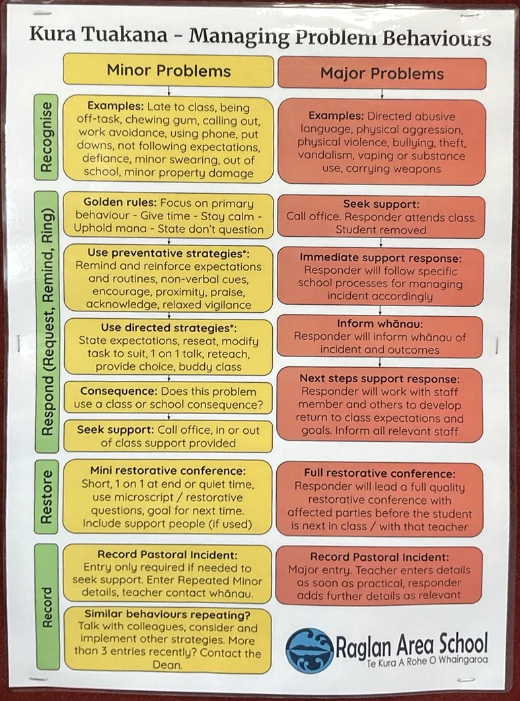
Pastoral system: The “Kura Tuakana: Managing Problem Behaviours” flowchart distinguishes minor and major problems and sets out preventative responses, support, restorative processes, whānau communication and recording. The display shows the stated procedure rather than evidence of how consistently it is implemented.
School culture
My mentor teacher took me to the local beach, wharf and town centre. Seeing these places helped me understand the references students made to life outside school. I later used Ngārunui Beach, Papahua Skatepark and Manu Bay as station names in the generator lesson. The science did not change, but the places were ones students could recognise.
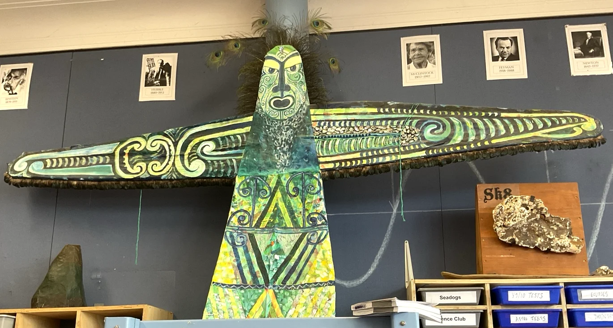
School culture: A decorated figure with Māori visual motifs, displayed in the Science learning area.
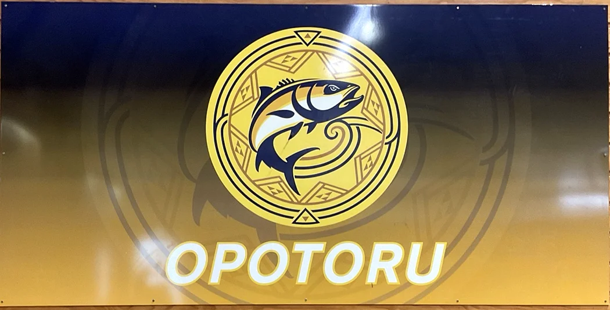
School culture: Opotoru house banner. The four house banners provide visible examples of the school’s house identities.
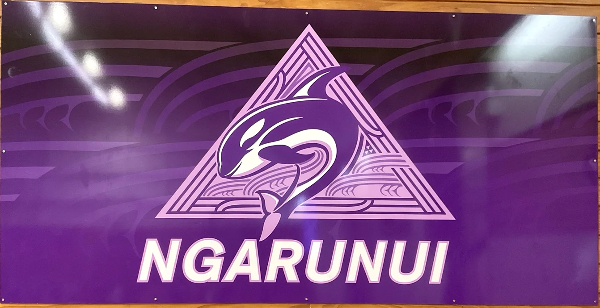
School culture: Ngarunui house banner.
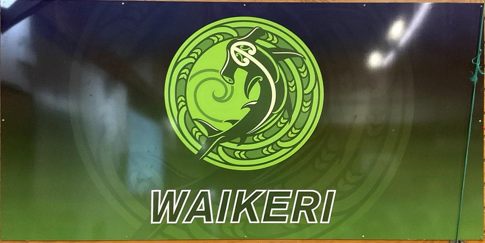
School culture: Waikeri house banner.
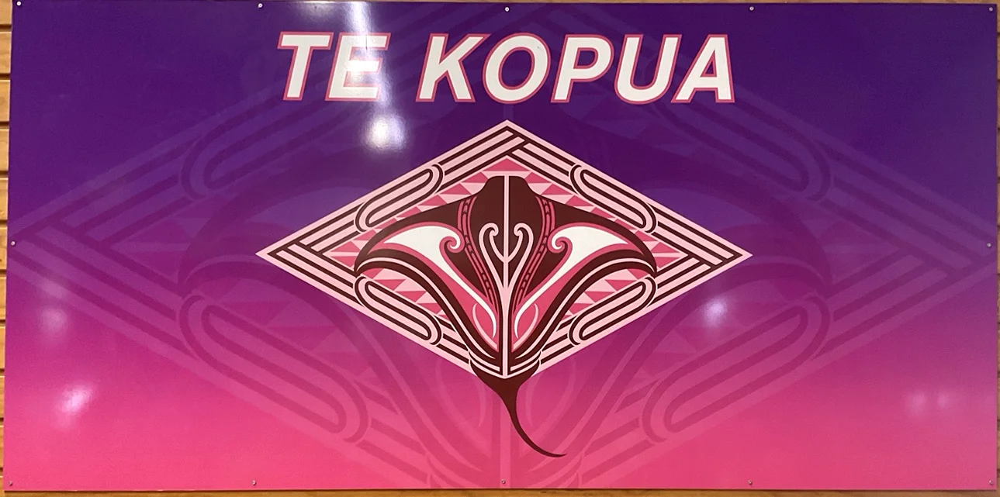
School culture: Te Kopua house banner.
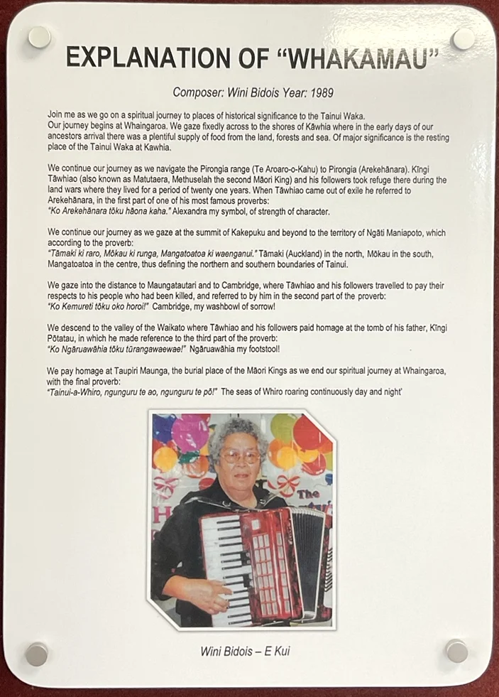
School culture: A displayed explanation of “Whakamau” credits Wini Bidois (1989) and describes connections with Whaingaroa and places significant to Tainui. This is evidence of local history being represented in the school environment.
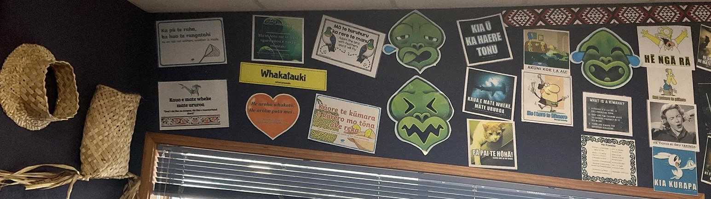
School culture: Whakataukī, kīwaha and woven items are displayed in the staffroom. These provide visible examples of te reo Māori and cultural representation in the staff environment.
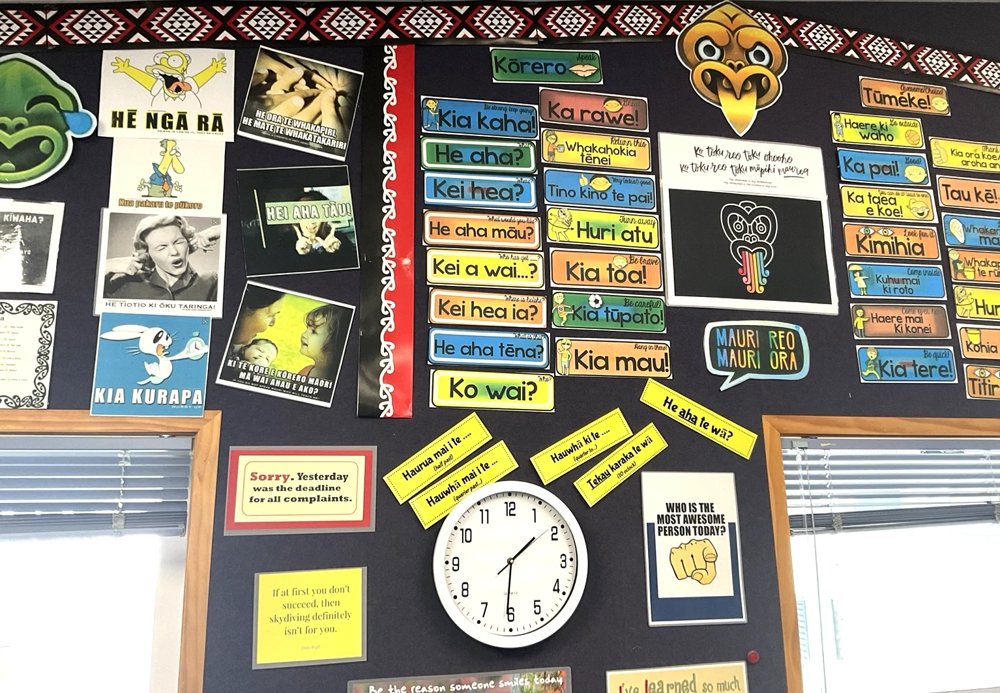
Staffroom language resources: Everyday te reo Māori phrases and bilingual prompts are displayed for staff. Their visibility provides an accessible reference, although I have not recorded how regularly staff use them in conversation.
School culture: Kura Tuakana expectations and rewards
Added 29 October 2026; photograph supplied by me.
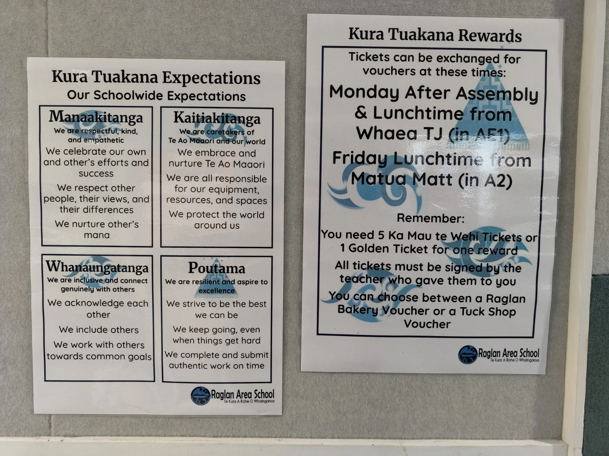
Photograph: Kura Tuakana expectations and rewards notices.
The expectations display connects manaakitanga, kaitiakitanga, whanaungatanga and poutama with everyday actions, including respecting others, caring for shared resources, including people and persisting with learning. The accompanying rewards notice explains that five teacher-signed Ka Mau te Wehi tickets or one Golden Ticket can be exchanged for a bakery or tuck-shop voucher. Together, the notices make the school’s values and reward process explicit. They show the expectations communicated to students, although the displays alone do not establish how consistently the system is used or how students respond to it.
School culture: Te Ūrunga Tapu o Tainui mural
Added 25 October 2026; observation date not recorded.
The mural and its accompanying explanation connect the school environment with Tainui histories and the whenua. According to the display, it depicts the Tainui waka beneath Tangi-te-korowhiti at Kāwhia, alongside Korotangi, with Karioi in the background. It began as a Year 10 art project in February 2024 and was completed in December 2025 through contributions from students and staff. Students also researched native plants and birds to inform the painting.
The display links the mural to the school whakataukī, composed by Wini Bidois, and explains that it has deliberately been placed facing Kāwhia. Te reo Māori is therefore presented alongside local stories, places and meanings. I see this as visible evidence of the school valuing te reo Māori and its connections with local Māori identity, rather than treating language as an isolated classroom topic. The collaborative process also gives students a part in shaping the school’s cultural environment.
What interested me was that the placement of the mural was itself part of its meaning. It made me think about how I introduce a whakataukī. I want students to have enough context to discuss what it means, rather than simply reading it at the start of a lesson.
Photograph: the mural displayed at school.
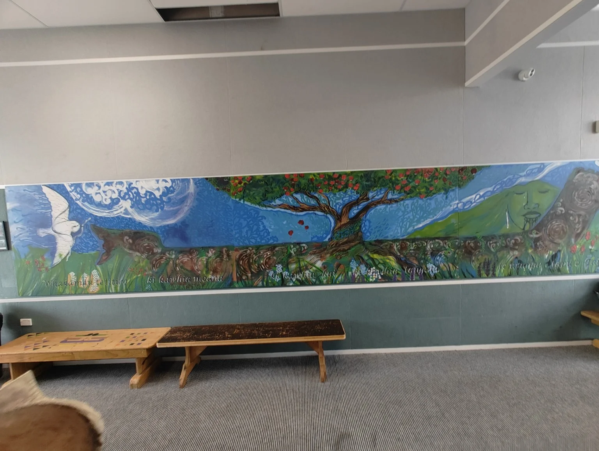
Photograph: the accompanying explanation and record of the mural’s development.
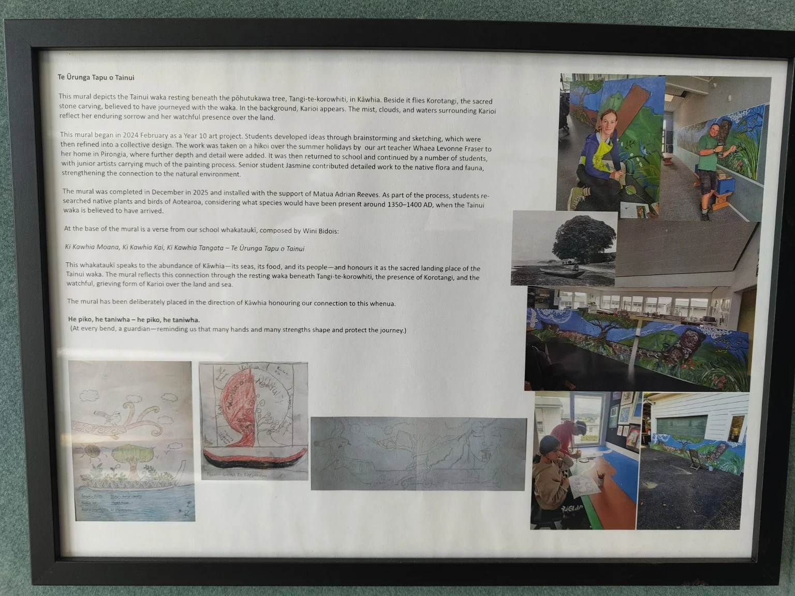
Source: school mural and accompanying interpretation panel, “Te Ūrunga Tapu o Tainui”; photographs supplied by me.
Lesson observations
During Week 1, Years 11–13 were sitting examinations, so my lesson observations were concentrated on Year 10 Science with my mentor teacher. My focused observation record also includes a restorative meeting led by my mentor teacher, a staff meeting led by a member of the leadership team, Year 9 Science with two Science teachers, and my mentor teacher’s Year 10 outing to conclude the ramp investigation. On the outing, one group completed the investigation at the skate park; rain prevented the second group from completing it. Detailed notes are recorded in Observations of others.
Classroom environment
My mentor teacher did not keep the same seating arrangement for every lesson. I saw tables grouped for practical work, arranged in rows for individual tasks and set in a circle for discussion. This gave me a practical question to ask when planning: does the room make it easy for students to do the thing I am asking them to do?
Teacher practice
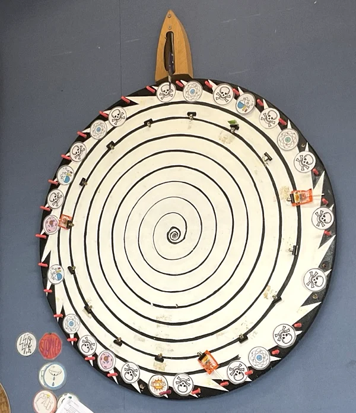
Teacher practice: A prize wheel used as a reward. Students earn a spin and can receive candy. This is an example of gamification through an earned opportunity and a reward.
During the second week, I supported Year 11 students working independently on the ramp investigation while a relieving teacher was present. My mentor teacher had asked me to offer help where it was needed without taking over discipline. Some students returned to the task when I spoke to them individually, but others did not. Afterwards, my mentor teacher and I discussed what preparation the students had received and how much I still needed to learn about the class.
On 12 October 2026, my mentor teacher led the opening part of the Year 10 Science 2 lesson, covering electrical quantities, sources, devices and circuit symbols. I then led approximately fifteen minutes of Van de Graaff demonstration and used an atomic model to explain charging by friction. This was a shared teaching experience and gave me an opportunity to connect an observable effect with a scientific explanation.
Students
The Year 11 ramp investigation and Year 13 exam preparation needed different kinds of support. In Year 11, I had to approach students and help some of them restart. In Year 13, the six students were mostly working on their own and asked for help when they needed it. In a Year 9 open-book assessment, I supported a student with reading and writing. That made me think about whether the way an answer is recorded can get in the way of seeing what a student knows.
An observation recorded on 13 October concerned students’ friendship and seating patterns. Girls and boys often chose to sit separately in class and to spend breaks in separate groups. There were Year 10s and exceptions, and I did not count the pattern systematically or establish why it occurred. It prompted me to consider how peer relationships might affect participation in different activities, without assuming that the pattern itself indicated exclusion.
Social competence
At Science Club, I co-led an activity in which primary students worked in groups to build boats from playdough, aluminium foil and popsicle sticks. The task gave them a shared problem to solve. I recorded what they built, but not how they divided the work or resolved disagreements. That is something I would pay more attention to if I ran the activity again.
Overall learning and next steps
One lesson made the importance of knowing the group particularly clear. On 9 November, none of the six Science 2 groups completed the two-lamp circuit. Even the two groups that kept trying could not finish it in about 40 minutes. My mentor teacher and I discussed this and prepared guides that students could lay the components on. On 11 November, almost every group in Science 1 finished the challenge in 10 to 15 minutes. It was a different group, and I had also changed the task into a competition, so I cannot put the difference down to the guide alone.
My main takeaway is that I need to know the students well enough to choose a task that gives them a reason to engage and a way to get started. The outlet wiring and generator stations worked well because students could do something with the idea, and my mentor teacher helped me choose contexts that made sense to them. Next time, I want to check each student’s understanding as well as the group’s progress. A working circuit shows that the group has made the connections. A short explanation or a sketch can show what each student understands.